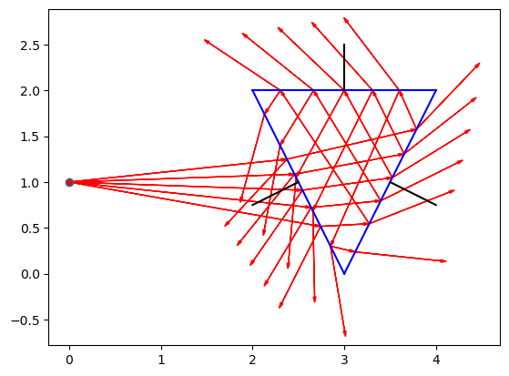

surf = []
surf.append(Surface(Point(4,2), Point(2,2), n2=1.5))
surf.append(Surface(Point(3,0), Point(4,2), n2=1.5))
surf.append(Surface(Point(2,2), Point(3,0), n2=1.5))
# Source Point
sp = Point(0.0,1.0)
# Initial Rays
rays_out = gen_rays(sp, -10, 10, 5, endpoint=False)PlanoLux
This is a library for doing 2D ray tracing.
This is the basic class for 2D points.
Point
Point (xi, yi)
Initialize self. See help(type(self)) for accurate signature.
This is the class for a ray, or vector with origin point.
Ray
Ray (ai, bi, ii=1.0)
Initialize self. See help(type(self)) for accurate signature.
This is a surface to reflect, refract, absorb, scatter, image at.
This needs to be ref/ref, ref only, absorb only, scatter
Surface
Surface (ai, bi, n1=1.0, n2=1.5)
Initialize self. See help(type(self)) for accurate signature.
Intersection and ray casting.
plot_scene
plot_scene (rays, surfs, sp, raycol='red')
gen_rays
gen_rays (sp=<__main__.Point object at 0x7f2d22390790>, ao=-180, ae=180, na=60, endpoint=True)
cast
cast (r, surf)
intersect
intersect (R, S)
Now show this works.
Vector Reflection
For an incoming ray \(\vec{s}\) and a surface normal \(\vec{n}\) the reflected ray \(\vec{v}_{reflect}\)
\[ \vec{v}_{reflect} = \vec{s} - 2 (\vec{s} \cdot \vec{n}) \vec{n}\]
reflect
reflect (R, S, P)
This checked reflections at various angles.
Vector refraction Snell’s Law
For an incoming ray \(\vec{s}\) and a surface normal \(\vec{n}\) the refracted ray \(\vec{v}_{refract}\)
\[\vec{v}_{refract} = r \vec{s} + \left( r c - \sqrt{1-r^2 (1-c^2)} \vec{n} \right)\]
where \(r = \frac{n_1}{n_2}\) and \(c = -\vec{n} \cdot \vec{s}\).
refract
refract (R, S, P)
lens
lens (R1, R2, T, H, XL, N=16)
Ray caster should start at sp, array of cast rays added to list with initial intensity.
Every ray is intersected with every surface. Closest surface (in direction of ray) is chosen as first intersect. Intersect position noted as new source point, reflected and refracted rays generated. Intensity of each decreased.
Rays removed with no intersections left or intensity too low.
Fresnel Equations
reflectance
reflectance (r, sc)
Now lets see all the reflect and refract work.
raytrace
raytrace (rays_out, surf, reflect_rays=True, refract_rays=True, DEPTH=10, RT=0.001, verbose=False)
rays_all = raytrace(rays_out, surf)
plot_scene(rays_all, surf, sp, raycol='red')